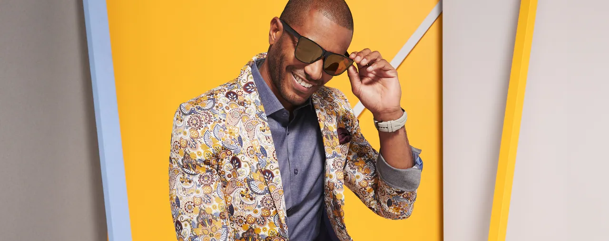
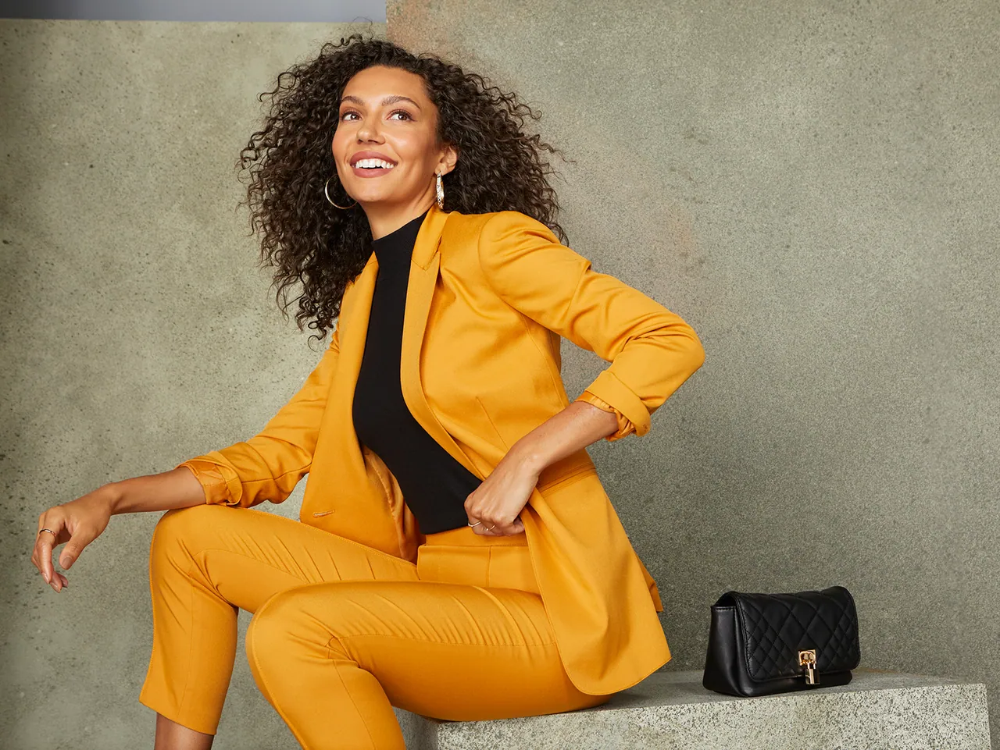

Concept Development & 360 Campaign
Light as Air
For the concept and art direction of K&G Fashion Superstore’s Spring 2020 campaign, I set out to evoke the shapes of spring in a minimalist way, inspired by the geometric pop art of Mondrian and rendered in bold fashion shades. The concept tells a story of light, the outdoors, and a fresh outlook for the season.
As Art Director at K&G, I directed the brand’s seasonal creative across every channel: in-store signage, the website, email campaigns, social media and broadcast. A selection follows.
- Role
- Art Director & Designer
- Client
- Tailored Brands, K&G Fashion Superstore
- Project
- Spring 2020 Campaign
- Photography
- Jenna Alcala
- Copywriting
- Lauren Peck
- Styling
- Jennifer Telford, Rachel Darey
- Graphic Design
- Elliot Morrow
Editorial Design
Spring 2020 Lookbook Concept
Concept · Editorial Design
To give the campaign an editorial home, I designed a printed lookbook: the season’s story, the styled looks, and the models in their own words, set inside the same color-blocked world as the shoot.
I pitched a printed edition each season; it remained a concept.
In-Store
Shop & Save
In-Store Signage & Coupons
The Spring Gift Event brought the campaign onto the sales floor: in-store signs and table toppers announcing a $25 coupon for every $75 spent, redeemable on a next purchase of $100 or more.
Digital
Digital Deployment
Email & Instagram Stories · Spring 2020 Campaign
The campaign carried into customers’ inboxes and Instagram Stories, with the same photography, color blocking and editorial headlines. “The Dress Edit” turned the shoot into a Stories series of looks for every occasion.
“Sunny Days Ahead” email “Spring Forward” email “The Dress Edit,” Instagram Stories
Broadcast
Father’s Day: Celebrate Dad
TV Commercial · Art Direction, Concept & Set Design
Our team regularly collaborated with business partners to produce live-action assets for the brand. From concept to execution, we focused on high-quality video that resonated with our audience and showcased K&G’s identity.
I also supervised the Spanish-language version of this commercial, and cast the voice talent for men’s and women’s spots in other campaigns.
- Role
- Art Direction, Concept, Set Design
- Spanish Version
- Supervision
- Copywriting
- Lauren Peck
- Styling
- Jennifer Telford, Rachel Fawkes
Fall & Holiday
Beyond Spring
Concept, Set Design & Art Direction · Campaign & Still-Life Photography
Each season brought its own campaign. For K&G’s Fall and Holiday seasons, I developed the concept and set design, art-directed the on-figure and still-life photography, and carried each campaign into email and Instagram Stories.
I also directed my team and managed content for our social channels: behind-the-scenes reels for each season offered a sneak peek of what was coming, while showing the team having fun on set.

“Fall Remix 2021,” behind the scenes “Shoe Guide,” Instagram Stories “Red Hot” holiday email